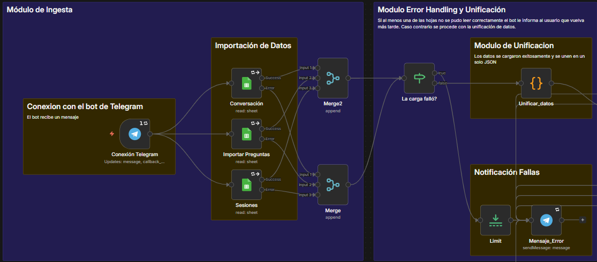

Notice: This project contains detailed workflow diagram screenshots. Desktop viewing is recommended to properly appreciate the node configurations.
Case Study Description
Note on Localization: The demonstration video and workflow diagrams retain their original Spanish layout. However, all technical logic, module explanations, and best practices are fully translated into English below.
The project consists of an automated workflow that operates a trivia game via Telegram. Users interact with the bot to answer questions, manage a life system, and accumulate scores based on different difficulty levels. The game states and question inventory are persistently managed using Google Sheets.
To handle user unpredictability (as they might type free text instead of using the interface buttons), the flow integrates artificial intelligence to orchestrate and streamline the interaction following this cycle:
- Automatic Trigger: The flow is activated via a Telegram Trigger that listens in real-time for any text message or button press in the bot's chat.
- Classification LLM (Orchestrator): When free text is detected, the input is sent to a primary language model (Llama 3 via Groq) strictly configured for semantic classification tasks. The LLM deduces the user's intent and returns only a structured JSON object with the key "action" (which can take the values: answer, play, rules, or reprimand).
- Conditional Logic: A Switch node acts as a router reading the LLM's structured output. If the action is invalid or the conversation is out of context, the flow is routed through the "reprimand" branch.
- Content Generation LLM (Interaction): The "reprimand" branch feeds a secondary language model with two variables: the user's irrelevant message and the current database context (whether an active game exists). This LLM assumes the role of a "sarcastic host", crafting a dynamic response to get the user back on track.
- Notifications and Metrics: Outputs (whether from the game engine or LLM-drafted responses) are sent back to the user as Telegram messages, dynamically modifying the interface to hide obsolete inline keyboards. Additionally, a response log is recorded in a History sheet for metrics and further analysis.
Bot Demonstration in Action
Ingestion, Unification, and Error Notification Module
- Receives the Telegram Trigger and executes parallel reads to Google Sheets.
- The
Unify_datanode normalizes IDs, cross-references session information, and packages everything into a single JSON object that travels through the rest of the flow. - The error notification module sends a message to the user if there was an issue reading and/or updating data in the Google Sheets.

User Management and Session Control Module
- Verifies if the user exists in the database. If not, it creates them.
- 24h Control: Evaluates the
last_interactiontimestamp. If it exceeds 24 hours of inactivity, it clears the state variables and notifies the user that their session has expired.
LLM Orchestration Module
- Text messages that are not direct commands enter the text conditional node.
- LLM_Orchestrator: Receives the current question's options and the user's text. Returns a strict routing instruction.
- Semantic Switch: Routes to assigning the synthetic answer, sending the game rules, or to the Interaction Module.
- LLM_Interaction: Generates a sarcastic response requiring the user to return to the trivia flow if the original message was irrelevant.

Game Logic Module (Setup and Evaluation)
- Prepare Game: Configures lives (5, 3, or 1) and score multipliers (x1, x1.5, x2) based on the selected difficulty. Performs random sampling of questions by category.
- Evaluate Answer: The mathematical core of the game. Compares results, adds points applying the multiplier, subtracts lives, and updates the historical record.
- Interface Cleanup: Dedicated nodes use Telegram APIs to remove inline keyboards from previous messages, preventing chat clutter.
- Update History: For each evaluated answer, a new row is inserted into a spreadsheet recording key parameters (timestamp, difficulty, question ID, result) for later ingestion into Business Intelligence tools.
- Insistence and Rules: If the user refuses to play, a rejection level is calculated to escalate pressure in the returned message. If they ask for the rules, the origin route is verified to determine whether previous buttons need to be deleted.

Applied Best Practices
- Anti-Zombie Prevention (Idempotency): Strict verification cross-referencing the pressed button's ID against the database ID, preventing double-counting bugs if a user clicks old buttons.
- Fault Tolerance (Error Handling): Nodes configured with retry policies and "Continue On Fail" settings for external API drops, alongside automated maintenance notifications for the user.
- Payload Filtering: Native validation to ignore image, audio, or sticker uploads, ensuring LLM processing nodes only operate with valid text strings.
Looking to automate complex processes?
I design scalable workflows integrating traditional logic with artificial intelligence models to optimize operations and build conversational tools.
Connect on LinkedIn Send Email